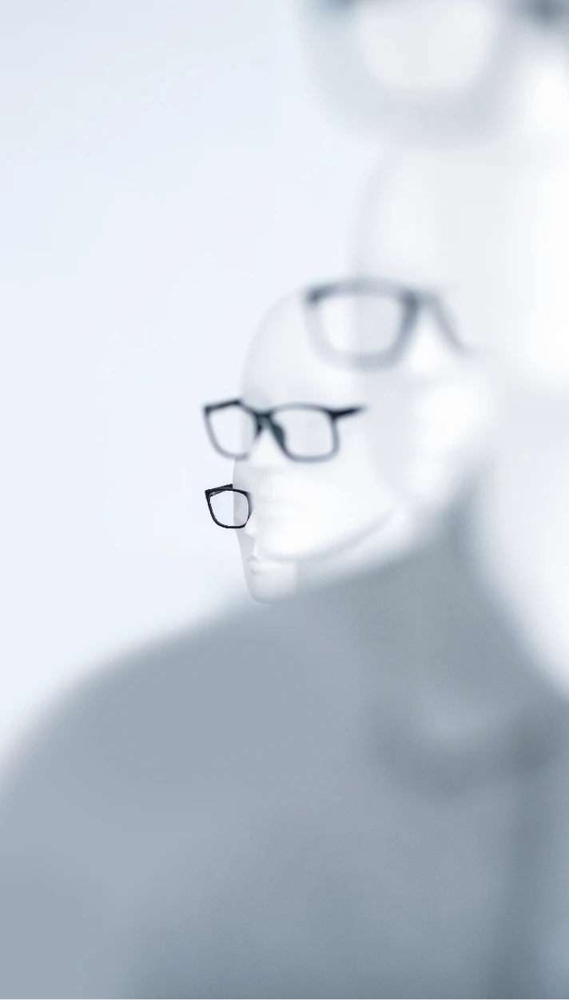
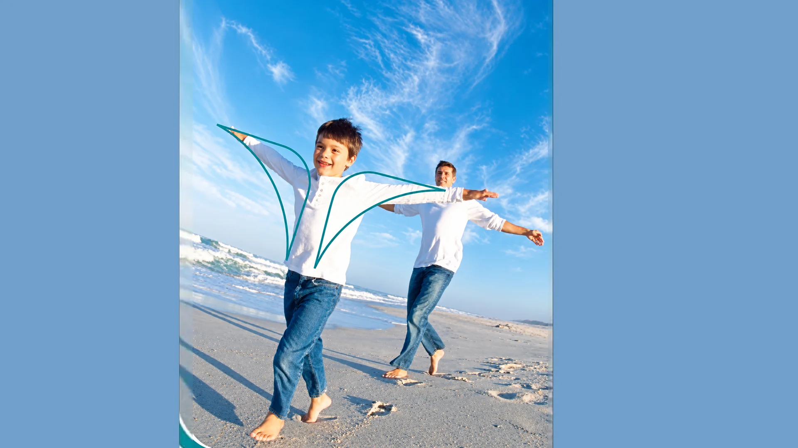
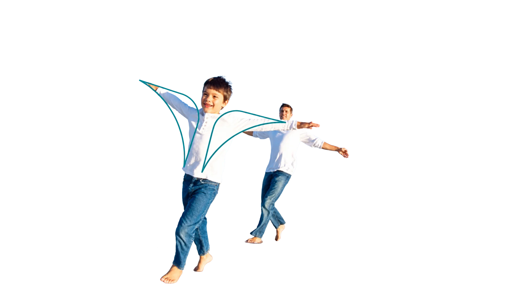
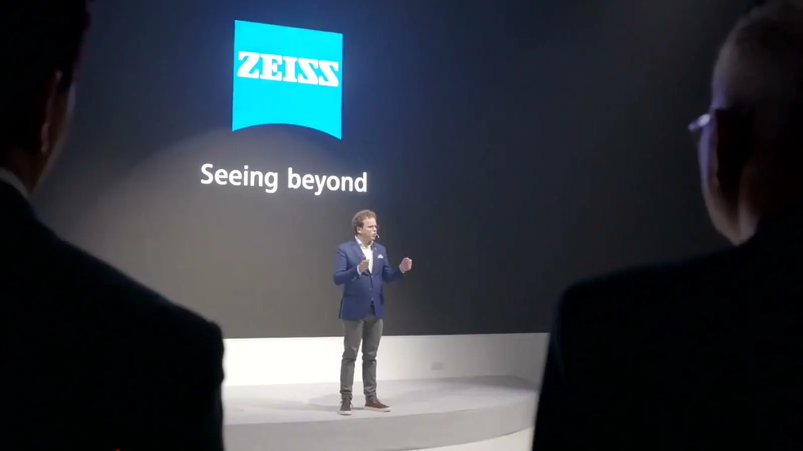

Antoni Gerges, Creative Director, Brand & Experiential. Big ideas, built.
Selected work
Ideas you can see in the work.






ZEISS Vision Care
A lens, the brackets and an eye: one picture.
Live six days after confirmation.
Open the project →Liwa International Festival
Built from nothing.
Six zones on open sand, for 16 days.
Open the project →Dubai Health Authority
A star with one corner open. The name completes it.
Almost 1,000 staff voted for the mark.
Open the project →The reel.

The reel · 2:00 · sound
PlayZEISS
74 feet of screen.
The case studies.
ZEISS · Liwa · Dubai Health Authority · MAF · Capacity Middle East · Why Not! Mazzika

ZEISSLive six days after confirmation. LiwaBuilt from nothing.
LiwaBuilt from nothing. Dubai Health AuthorityA star with one corner open. The name completes it.
Dubai Health AuthorityA star with one corner open. The name completes it. MAFGS is One: the number one, written in words.
MAFGS is One: the number one, written in words. Capacity Middle EastA city in one line.
Capacity Middle EastA city in one line. Why Not! MazzikaMake room for six acts.
Why Not! MazzikaMake room for six acts. World Future Energy SummitA thumbprint is a signature no one can copy.
World Future Energy SummitA thumbprint is a signature no one can copy. Cityscape Abu DhabiFrom floor plan to full scale.
Cityscape Abu DhabiFrom floor plan to full scale.
- ZEISS
- Liwa
- Dubai Health Authority
- National Bullying Prevention Week
- AIAASC
- Abu Dhabi International Building Codes
- Children of Light Academy
- Al Forsan International Sports Resort
- Capacity Middle East
- MAF
- The Big Grill
- Akshaya × Vikas Khanna
- Innovation Month
- Cityscape Abu Dhabi
- World Future Energy Summit
- Exhibitions
- Why Not! Mazzika
- Live shows
- Mohamed Mounir Live in Dubai
- Amr Diab Live in Dubai
- Angham Live in Dubai
- Magida El Roumi Live in Dubai
- Lilly Singh Live in Dubai
- Hakawi Sharqia
- Dubai Health Authority
- ZEISS
- Liwa
- AIAASC
- Why Not! Mazzika
- National Bullying Prevention Week
- Al Forsan
- Exhibitions
- Cityscape Abu Dhabi
- World Future Energy Summit
- Abu Dhabi International Building Codes
- The Big Grill
- Innovation Month
- MAF
- Capacity Middle East
- Live shows
- Mohamed Mounir Live in Dubai
- Amr Diab Live in Dubai
- Angham Live in Dubai
- Magida El Roumi Live in Dubai
- Lilly Singh Live in Dubai
- Hakawi Sharqia
- Akshaya × Vikas Khanna
- Children of Light Academy
In numbers
In numbers
Years
Collectively managed
Government entities
Cities
DHA print reach
Days to open a pavilion
Read moreClose
- 23
- From a first job in Cairo in 2003 to leading the whole assignment in Dubai, Abu Dhabi and now Tampa.
- Creative Director, Brand & Experiential.
- $10M+
- Managed a collective $10M+ in delivered projects — accountable for the client and the result, from first brief to final delivery.
- Founder of AntBrush; partner at MCX.
- 20
- Ministries, municipalities and authorities across the UAE.
- I led the creative, from the idea to the delivery.
- 10
- National Bullying Prevention Week, across 10 cities.
- I led the campaign brand and its content.
- 83%
- The DHA launch reached 83% of locals and Arabs in the measured UAE print audience in 2008. The media report excludes outdoor.
- I led the pitch, the identity and the launch.
- 3
- Cityscape Abu Dhabi, 2017: a 7,200 sq ft pavilion for fourteen government projects, built in the hall in three days.
- I led the concept, the design and the build.
- 2003CairoGraphic designer
- 2006DubaiJunior art director
- 2007AntBrushFounded in Abu Dhabi; Dubai and Cairo followed
- 2017MCXPartner, Creative Director & Co-producer, Dubai
- 2024Tampa, FloridaCreative direction, with new tools for making
Trusted by
Clients from 2007 to 2024, by sector.
ZEISS · Etisalat · MAF · Unilever · ADNOC · Deutsche Post DHL · Dubai Health Authority · UAE Ministry of Education
- Dubai Health Authority
- Department of Municipalities and Transport, Abu Dhabi
- UAE Ministry of Education
- UAE Ministry of Foreign Affairs and International Cooperation
- Abu Dhabi Sports Council
- Abu Dhabi Airports
- Abu Dhabi Media
- Dubai Land Department
- Emirates Post Group
- Khalifa Fund for Enterprise Development
- Abu Dhabi Urban Planning Council
- Department of Urban Planning and Municipalities, Abu Dhabi
- Department of Transport, Abu Dhabi
- Abu Dhabi City Municipality
- Al Ain City Municipality
- Al Dhafra Region Municipality
- Musanada
- Abu Dhabi Projects and Infrastructure Centre
- Shurooq, Sharjah Investment and Development Authority
- Emirates Center for Strategic Studies and Research
- Abu Dhabi Education Council
- Abu Dhabi Food Control Authority
- Telecommunications Regulatory Authority
- Abu Dhabi Chamber of Commerce and Industry
- Abu Dhabi Centre for Technical and Vocational Education and Training (ACTVET)
- ASUS
- ABB
- JVC
- Emaar Misr
- Ducab
- Dubai Airport Freezone
- Elm
- Tawazun
- Arabsat
- Nas Air
- RAK Porcelain
- DOKA
- Liberty Automobiles (Cadillac and Chevrolet)
- Bin Jabr Group
- Al Hamra Group
- ADCOM Systems
- Emdad
- Suwaidi Engineering Group
- United Broadcast
- PAKSAT
- iMCC Group
- Ceramica Omega
- Ceramica Verdi
- Pal Middle East
- Mazroui Engineering
- NAS (Naval Advanced Solutions)
- Dar Designs
Venues
Where the work stood.
Coca-Cola Arena · Armani Hotel, Burj Khalifa · Atlantis The Palm · The Pyramids, Giza · Dubai World Trade Centre · ADNEC Abu Dhabi
- Coca-Cola Arena · Why Not! Mazzika, 2019
- Armani Hotel Dubai, Burj Khalifa · Capacity Middle East gala, 2018
- Atlantis The Palm, Nasimi Beach · Capacity Middle East gala, 2019
- Dubai Media City Amphitheatre · Amr Diab, Mohamed Mounir, Magida El Roumi, 2017–18
- Dubai World Trade Centre · Angham, 2017; Gulf Traffic, 2018; GITEX
- Emirates Golf Club · Hakawi Sharqia, The Big Grill, 2017
- JW Marriott Marquis Dubai · DMT, 2023
- The Space, Dubai · ZEISS launch, 2022
- City Centre Mirdif and City Centre Deira · MAF, 2018
- ADNEC · World Future Energy Summit 2011–15, Cityscape Abu Dhabi, National Housing Exhibition, Tawdheef, IDEX, ADIPEC, ISNR
- Abu Dhabi Global Market · ADPIC introductory seminar, 2024
- Rosewood Abu Dhabi · Future Leaders Programme, 2022
- Yas Links, Yas Island · The Big Grill, 2018
- Yas Island · Balqees, 2018
- Umm Lafina Bridge · ground-breaking 2017, opening 2022
- Moreeb Dune, Liwa · Liwa International Festival, 2020
- Al Ain · Innovation Month 2024, Union Day, Sheikh Zayed Year book launch, Ramadan Nights
- Al Dhafra Region · DMT townhall and National Day
- Expo Centre Sharjah · Sharjah International Book Fair
- Marriott Mena House, Giza, at the Pyramids · MAF, 2021
- Istanbul · Unilever, 2018
GITEX Technology Week · GITEX Shopper · ADIPEC · IDEX · ISNR · Cityscape Abu Dhabi · Cityscape Dubai · World Future Energy Summit · Arabian Travel Market · CABSAT · Gulfood · Middle East Electricity · The Big 5 · Dubai Airshow · NAVDEX · ADIHEX · Najah · Tawdheef · Careers UAE · Hotel Show · Abu Dhabi Book Fair · Sharjah International Book Fair · Gulf Traffic · National Housing Exhibition · Gastech (London) · Metal (Jeddah) · BATIMAT (Paris)
In their words
In their words.
“This collaboration was made possible by the efforts of AntBrush Founder, Antoni Zaki, another one of our preferred partners.”
“…assigning AntBrush by direct order, for presenting the best technical offers.”
“Keep up with the good work.”